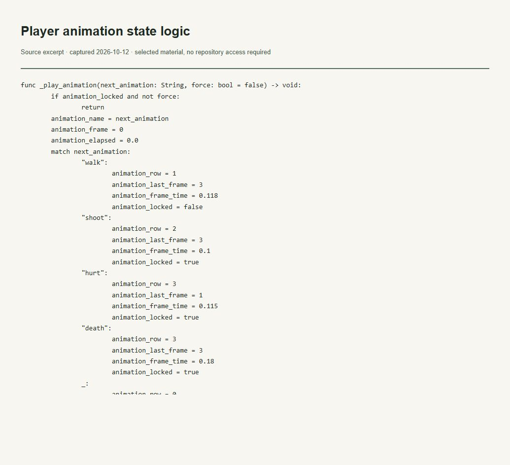

Evidências do trabalho
Estados de animação e integração com gameplay
O que esta evidência demonstra
Mostra timing de walk, shoot, hurt, death e idle na implementação examinada.

Ler transcrição literal acessível
func _play_animation(next_animation: String, force: bool = false) -> void: if animation_locked and not force: return animation_name = next_animation animation_frame = 0 animation_elapsed = 0.0 match next_animation: "walk": animation_row = 1 animation_last_frame = 3 animation_frame_time = 0.118 animation_locked = false "shoot": animation_row = 2 animation_last_frame = 3 animation_frame_time = 0.1 animation_locked = true "hurt": animation_row = 3 animation_last_frame = 1 animation_frame_time = 0.115 animation_locked = true "death": animation_row = 3 animation_last_frame = 3 animation_frame_time = 0.18 animation_locked = true _: animation_row = 0 animation_last_frame = 3 animation_frame_time = 0.22 animation_locked = false _update_sprite_frame()
Contexto e limites
A lógica é observável; qualidade da animação ainda exige avaliação visual em jogo.
A imagem é uma captura local de um recorte literal do arquivo verificado. Não é captura da interface do GitHub nem da aplicação em execução. O trecho permanece no idioma original.